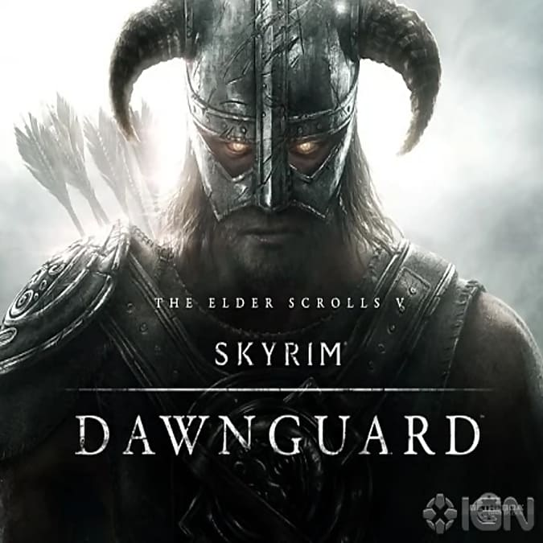
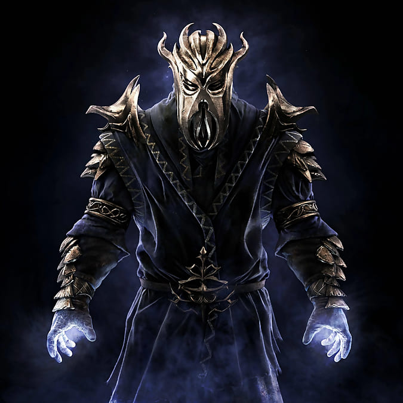

El juego se desarrolla en la region de "Skyrim", ubicada al norte del continente de Tamriel, caracterizada por sus climas frios y terreno montañoso. La misma se encuentra dividida en nueve comarcas, cada una con sus diferentes capitales y culturas para explorar. Si bien nos encontraremos con las diferentes razas que viven en el mundo de elder scrolls, los nordicos son aquellos que veremos mas a diario durante nuestro recorrido. Los mismos nos mostraran una cultura con muchos rasgos de una cultura guerrera y bastantre importancia en las tradiciones.A lo largo del mapa encontraremos diversas zonas para explorar y aventurarse a lo desconocido, mausoleos nordicos antiguos, infestados de no-muertos, donde podremos encontrar tesoros de tiempos antiguos, tambien podremos despejar campamentos de bandidos y traer seguridad a las tierras nordicas y por supuesto no podemos olvidarnos de los dragones, a los cuales podremos enfrentar en combates epicos a lo largo de todo Skyrim.
Clases
Skyrim se diferencia a su predecesores y otros juegos de rol en que no tiene una seleccion de clases comun, en la que te dan una lista de opciones a elegir (mago, guerrero, asesino, etc.), determinando tu progreso y adquisicion de habilidades. Los creadores decidieron no incluir este sistema, implementando distintas ramas de habilidades epecificas, asi como "armas a una mano (subira de nivel al inflingir daño a enemigos con espadas, hachas o mazas)", "armadura pesada (subira de nivel cuando recibamos daño y tengamos una armadura pesada)", "magia de curacion (subira de nivel al curarnos)", etc. Al subir estas abilidades incrementaremos el nivel personal de nuestro personaje, adquiriendo un puntos de habilidad para distribuir entre las distintas ramas y 10 puntos por nivel para incrementar nuestra vida, magia o aguante.
Expansiones
Dawnguard

Dawnguard fue la primera expansion oficial de Skyrim, lanzada el dia 26 de Junio 2012. Una nueva aventura que agrega diferentes caracteristicas a nuestro juego, entre ellas, una campaña contandonos sobre el enfrentamiento entre la Guardia del Alba, una orden cazavampiros y un culto de vampiros ancestrales liderados por Lord Harkon. Deberemos elgir a que bando nos uniremos y asi obtendremos diferentes recompensas (equipamiento, abilidades, bonificaciones, etc) segun a quien escojamos apoyar. Tambien se agregaron diferentes contrucciones y mazmorras que completar. En total, podremos disfrutar de 10 a 12 horas de contenido adicional en una historia atrapante.
Hearthfire
Hearthfire, la segunda expansion ofical de Skyrim, lanzada el 4 de Diciembre de 2012. A diferencia de Dawnguard, esta no se centra en el combate y la aventura, sino que nos da la pisibilidad de comprar un terreno y diseñar una mansion a tu gusto (Podremos elgir entre 3 ubicaciones maximo). Tambien se introdujeron las adopciones, permitiendo que adoptar niños en el orfanato de Riften y que vivan en nuestro hogar.
Dragonborn

La tercera y ultima expansion oficial de Skyrim, Dragonborn, lanzada el dia 4 de Diciembre de 2013 nos trae una gran cantidad de contenido en comparacion con las anteriores. En esta campaña viajaremos a la isla de Solstheim, ubicada en Morrowind, un mapa completo adicional con nuvos asentamientos, personajes, mazmorras e increibles misiones. Una vez en la isla, nos enfrentaremos al culto de Miraak, un antiguo sacerdote dragon y primer sangre de dragon. Deberemos evitar que el mismo reviva y conquiste todo Tamriel. Se estima que nos brinda 7 horas de juego adicional solo contando la serie de misiones principales.
.jpg)
.jpg)